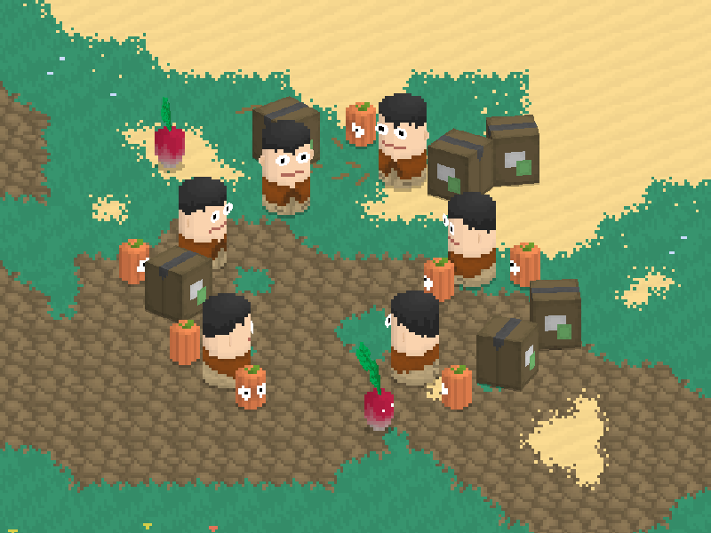

Current Project

In between school and job searching, I've been working on a puzzle dungeon game.
I'm striving to create a solid and believable feeling world in which to tell my story.
This game is made entirely in Gamemaker Studio using GML, a language similar to JavaScript and the C family.
 I'm particularly excited about the feature explained in this gif, the method I use to draw the characters in game.
I'm particularly excited about the feature explained in this gif, the method I use to draw the characters in game.
I created a script that maps a simple pixel art skin onto a rotatable tube sprite. This results in a pseudo-3D effect.
Representing my characters in this way creates a unique default style that is consistent across the entire game.
This method saves an incredible amount of time that would have been spent drawing multi-directional sprites.